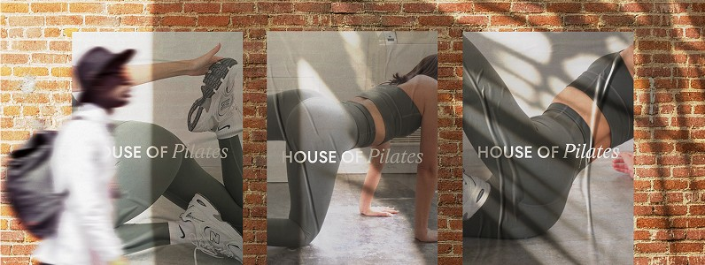
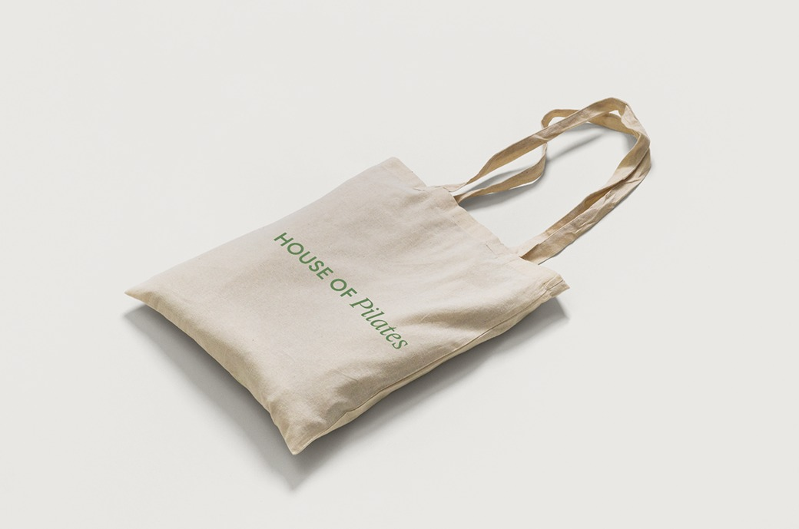

House of Pilates is a branding and photography project for a Pilates studio. The visual identity was designed to feel calm, refined, and approachable, using photography to capture movement, light, and the atmosphere of the space.
01 / 03

The identity
The brand was built around the atmosphere of the studio itself. Soft natural light, clean compositions, and minimal typography created a quiet visual language where movement became the focus.
This approach extended across photography, social media, printed materials, and the website, bringing every touchpoint together as one cohesive identity.
02 / 03

Photography
Photography became the foundation of the visual identity. Rather than documenting workouts, the focus was on capturing movement, balance, texture, and quiet moments to reflect the feeling of the space.